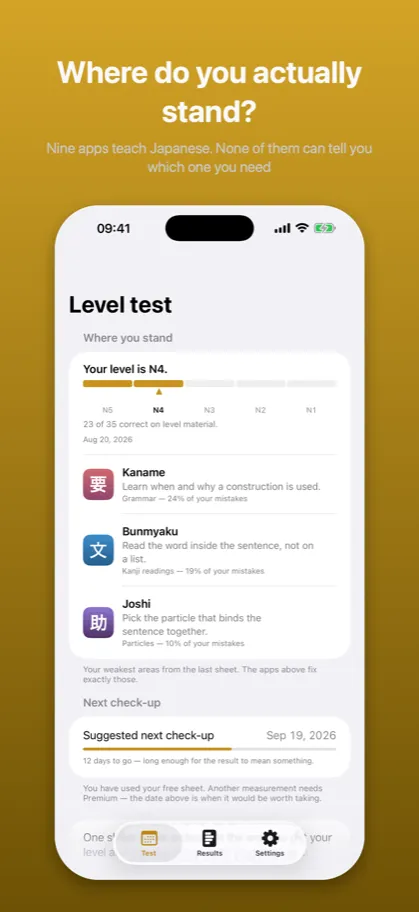
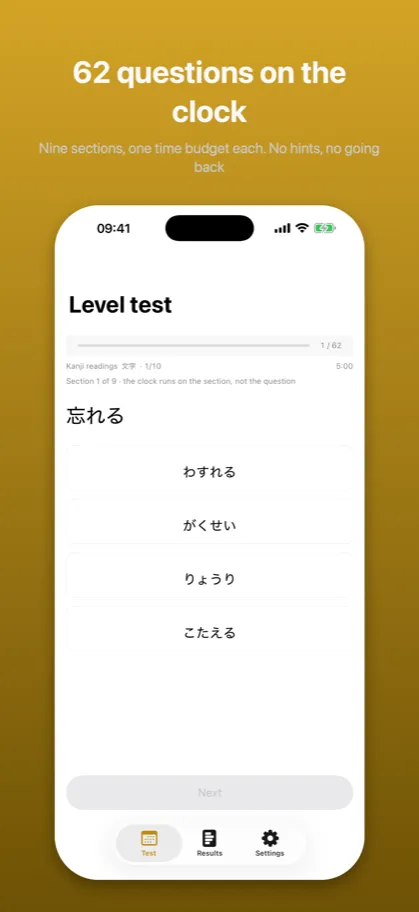
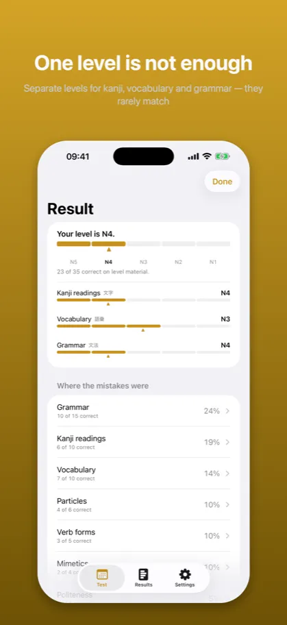
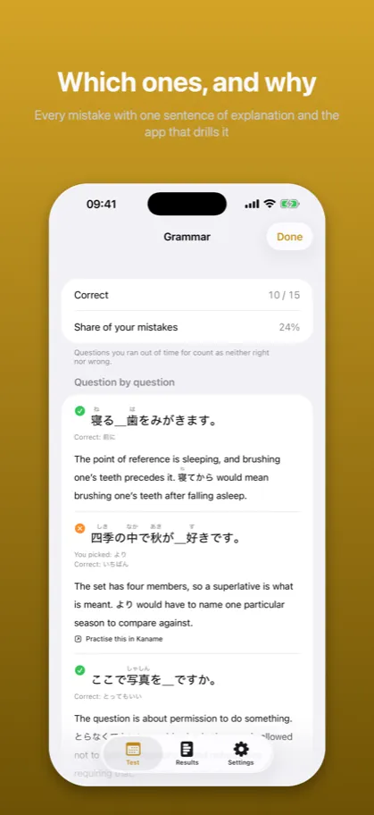
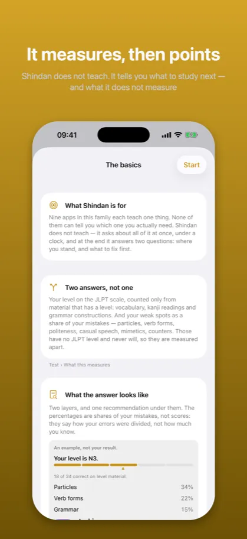

Shindan: Japanese Level Test診断
JLPT placement: N5 N4 N3 N2 N1
App Store →Free app with an in-app purchase
Nine apps teach one thing each. None of them can tell you which one you actually need. One sheet under a clock, and the answer stops being a guess.
What it looks like
{kind=link}

Nine apps teach Japanese. None of them can tell you which one you need
{kind=link}

Nine sections, one time budget each. No hints, no going back
{kind=link}

Separate levels for kanji, vocabulary and grammar — they rarely match
{kind=link}

Every mistake with one sentence of explanation and the app that drills it
{kind=link}

Shindan does not teach. It tells you what to study next — and what it does not measure
Description from the store
Shindan does not teach. It measures, and then it points.
You already know the feeling: you study, you make progress, and you still cannot say what your weakest link is. A grammar app knows how much grammar you have. It does not know that particles are what keeps costing you points. Nothing you own sees the whole picture, because nothing you own asks about all of it at once.
Shindan asks about all of it at once. One sheet, under a clock, and at the end two answers: where you stand, and the one thing worth studying next.
TWO ANSWERS, NOT ONE
Your level, on the JLPT scale, from the material that has a level: vocabulary, kanji readings and grammar constructions. Nobody asks "am I at practical level three" – they ask "will I pass N3", and that is the scale this answers in.
Your weak spots, as a share of your mistakes: particles, verb forms, register, contractions, mimetics, counters. These have no JLPT level and never will – a particle you meet in week one and use for life. Measuring them on the same scale would make that scale mean nothing, so they are measured apart.
NO PRACTICE, NO REPETITION, NO STREAK
There is nothing to grind here and that is deliberate. A sheet measures once. Answers are not marked as you go, because seeing three mistakes in a row changes how you answer the fourth – and then the test measures your nerve instead of your Japanese. The result comes at the end, or not at all.
WHAT IT WILL NOT DO
It will not give you a level from half a sheet. If too much ran out on the clock, it says so instead of guessing – a number from a thin measurement looks exactly like a number from a good one, and someone would build a study plan on it.
It does not measure reading longer texts, and it does not measure listening. Both are missing, both are named on the opening screen, and neither is hidden in the small print.
BUILT ON NINE
The questions come from the catalogs of nine Japanese-learning apps, all by the same author: grammar constructions, vocabulary in context, particles, conjugation, counters, casual speech, honorific register and mimetics. That is why the diagnosis can point somewhere specific – and why it says which app fixes what.
The first sheet is free.
The description above is the same text that stands on the App Store product page – it comes from the same file.
App Store →Free app with an in-app purchase
Common questions
What does Shindan teach?
Shindan does not teach. It measures, and then it points.
You already know the feeling: you study, you make progress, and you still cannot say what your weakest link is. A grammar app knows how much grammar you have. It does not know that particles are what keeps costing you points. Nothing you own sees the whole picture, because nothing you own asks about all of it at once.
What does this app not do?
There is nothing to grind here and that is deliberate. A sheet measures once. Answers are not marked as you go, because seeing three mistakes in a row changes how you answer the fourth – and then the test measures your nerve instead of your Japanese. The result comes at the end, or not at all.
It will not give you a level from half a sheet. If too much ran out on the clock, it says so instead of guessing – a number from a thin measurement looks exactly like a number from a good one, and someone would build a study plan on it.
Documents
The other apps
- Kaname: Japanese Grammar — JLPT practice: N5 N4 N3 N2 N1
- Bunmyaku: Japanese Reading — Vocabulary, kanji, furigana
- Katsuyokei: Conjugation — Verbs, adjectives and drills
- Joshi: Japanese Particles — Grammar drills for the JLPT
- Kazoekata: Japanese Counters — Counting, kanji and drills
- Kuzushi: Casual Japanese — Anime, drama and slang
- Keigo: Polite Japanese — Formal Japanese for work
- Kifuku: Japanese Pitch Accent — Pronunciation and listening
- Onomatope: Japanese Mimetics — Manga and anime vocabulary